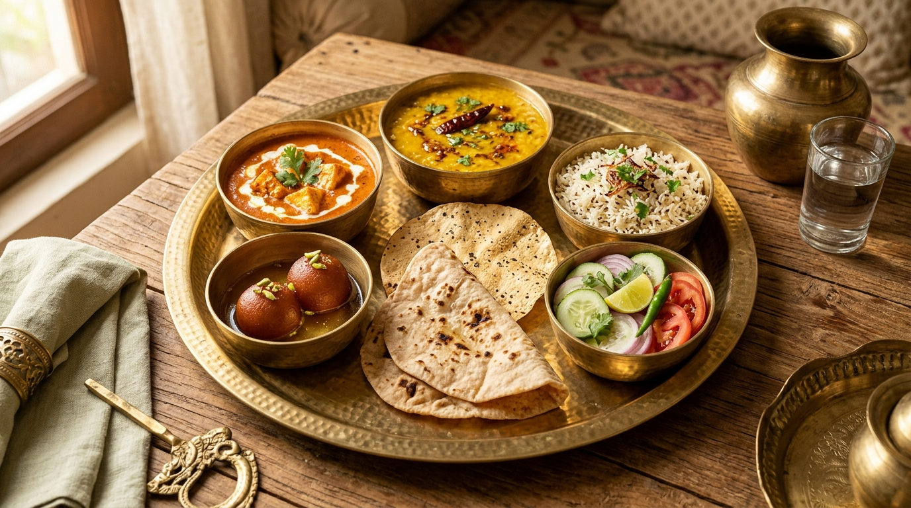

About Preeti's Kitchen
Pure vegetarian homestyle catering, comforting tiffin services, and bulk food orders crafted with warmth, wholesome ingredients, and respect for authentic Indian culinary traditions in Lucknow.
Food Prepared with Care, Just Like in a Family Home
Preeti's Kitchen was founded on a simple, grounded principle: good food does not come from factory-style batches or artificial shortcuts. It begins with carefully handpicked vegetables, freshly ground whole spices, unadulterated oils, and a clean, joyful cooking space.
Serving the historic city of Lucknow, known worldwide for its appreciation of refined flavours and hospitality (Tehzeeb), we take immense pride in preparing genuine vegetarian dishes that honour traditional North Indian and Awadhi palates without ever compromising on dietary purity.
Zero Contamination Guarantee: Our kitchen is 100% vegetarian. We do not store, prepare, or handle eggs, meat, poultry, or fish at any time. Vegetarians and families hosting religious events can place orders with absolute peace of mind.

Freshness, Cleanliness and Thoughtful Care
We believe in honest, transparent cooking. Here is what guides our everyday kitchen operations:
Fresh, Seasonal Ingredients
We source fresh vegetables from local Lucknow mandis on the day of cooking. From vibrant spinach to tender paneer and seasonal gourds, we choose only prime produce that delivers natural sweetness and nutrition.
We avoid pre-packaged frozen pastes or chemical preservatives in our daily preparations.
Meticulous Cleanliness
Clean cooking surfaces, filtered water, sanitized cooking utensils, and disciplined personal hygiene are standard practices in our kitchen. We treat every meal preparation as if it were for our own family elders and children.
Everything is washed and inspected thoroughly before entering the cooking vessel.
Homestyle Warmth & Customisation
No two families or events are identical. Whether you need mild spice for young children, special food for senior citizens, or strict Jain preparation without onion and garlic, we listen attentively and accommodate your needs.
Direct, transparent communication ensures your expectations are met reliably.
How We Operate Transparently
To maintain our high standards of fresh cooking and reliable service, we follow clear operational boundaries:
- Catering & Bulk Orders (10+ people minimum): Preparing a small batch with multiple curries, breads, and starters is done with dedicated care; hence catering and bulk packaging start at a minimum of 10 people.
- Tiffin Service: Wholesome daily tiffins (lunch and/or dinner) are available for individuals and working professionals across accessible delivery routes in Lucknow.
- Delivery & Pickup Confirmation: Lucknow is a vast city. Delivery availability and charges depend on exact location, event timing, and delivery logistics, and are confirmed upfront during enquiry.
- Direct Agreement: Final menu selections, per-plate or monthly subscription rates, and advance booking deposits are agreed directly between you and Preeti's Kitchen over phone or WhatsApp.